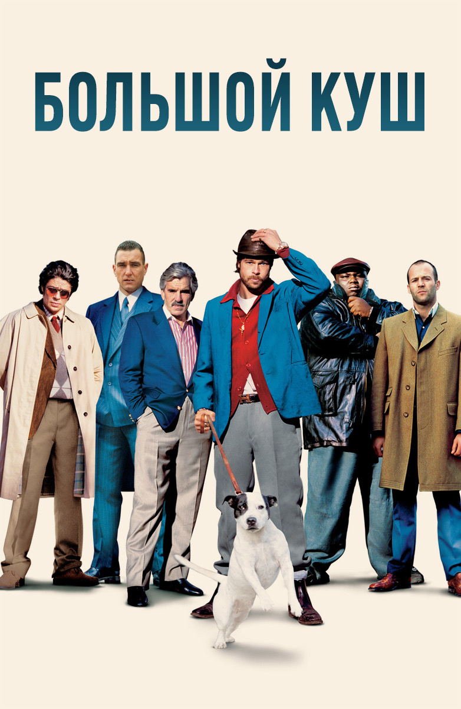

Самый большой куш

Этот фильм лучший, потому что:
- "Цыгане? Ненавижу,бл*ть, цыган!"
- "Две минуты, турецкий!"
- "Все ставки сделаны"
- "Да там боинг можно посадить!"
Развитие персонажей в течение фильма приведено в таблице ниже:
| Имя персонажа | Количество пальцев | Действия | Итог |
| Френки "4 пальца" | 4 | Ограбил | Ограбили |
| Джонни | 5 | Ждал | Подождал, выжил |
| Борис "Хрен попадешь" | 5 | Стреляли | Не попали |
Наличие стволов у персонажей фильма приведено в таблице ниже:
| Имя персонажа | Арбалеты | Алебарды | Нунчаки-топоры |
| Френки "4 пальца" | 4 | 4 | 2 |
| Джонни | 1 | 1 | 1 |
| Борис "Хрен попадешь" | 50 | 50 | 50 |